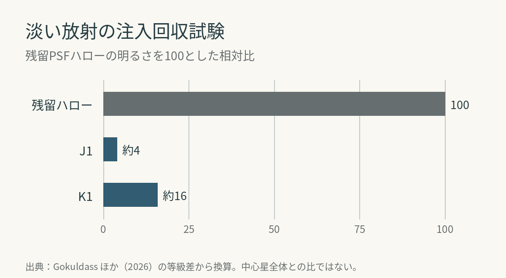

星の光を取り除く
地上の望遠鏡で星を撮ると、大気の揺らぎや望遠鏡の光学系の影響で、光が中心から周囲へ広がります。その広がり方を点像分布関数（PSF）と呼びます。淡い星周放射を観測するには、この光の広がりをどれだけ取り除けるかが重要です。
Gokuldassらは、ヨーロッパ南天天文台の大型望遠鏡VLTに搭載されたSPHEREの赤外線撮像装置IRDISを用いました。この装置では、大気による像の乱れを補正する補償光学と、明るい中心星の光を遮るコロナグラフを併用します。著者らは距離0.8キロパーセク以内の明るい赤色・黄色超巨星7個を、4種類の近赤外線フィルターで観測し、別の参照星の像を利用して残った星の光を除去しました。
見えないものの明るさを測る
今回の7天体では、明瞭な広がった星周放射を検出できず、赤外線の明るさにも明確な超過が見られませんでした。そこで著者らは、代表天体HD 74395の観測画像に人工的な淡いリング状の放射を加え、どの程度の明るさなら処理後の画像から回収できるかを調べました。検出限界は、短い波長側のJ1でコロナグラフ処理後に残る星の光の広がりより約3.5等級、K1では約2.0等級暗い放射でした。
原著の観測画像と注入回収試験（図1 PSF除去前後 · 図4 人工リングの回収）。


図を原寸で拡大する
この数値は、星そのものの明るさに対する伴星の検出限界とは異なります。広がった放射は面積あたりの明るさが低く、観測後の画像処理でも取り除かれやすいためです。今回の結果から著者らは、赤外線超過を示す天体を優先すること、フィルターの選択、空の明るさの補正、参照星の選び方を改善することを提案しています。物質が見つからなかったという観測結果を、どの程度の物質があれば見つけられたかという情報に変えることが、この性能評価の目的です。